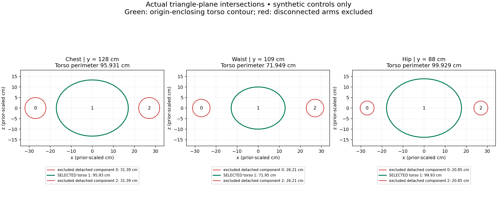
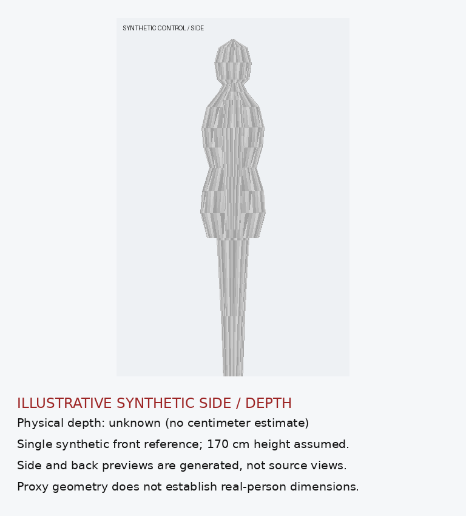

Actual mesh sections; units are prior-scaled cm. Height is assumed 170 cm. These are synthetic proxy dimensions, with unknown physical accuracy.
| Chest | Waist | Hip |
|---|---|---|
| 95.931 cm | 71.949 cm | 99.929 cm |
Central torso contours selected; detached arm loops excluded. Bust-point distance and physical depth remain unknown (null). Single synthetic front reference only; side/back previews are generated.


Structured measurements and SHA-256 hashes · Report · Reproduction script · Independent VTK verification